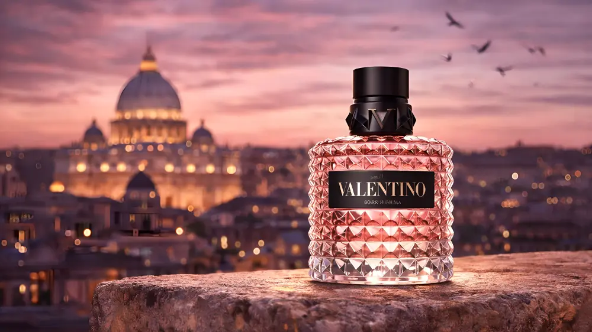
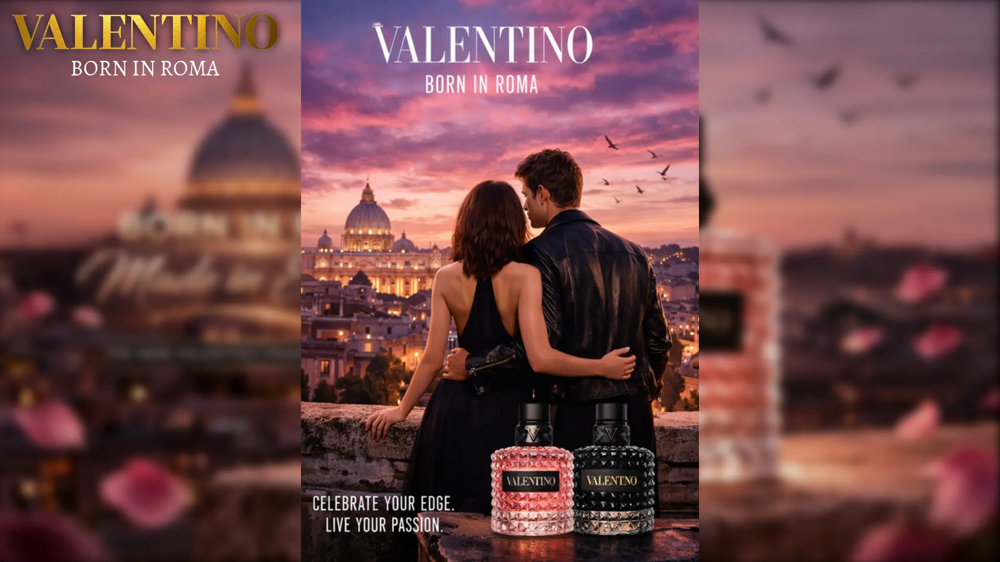
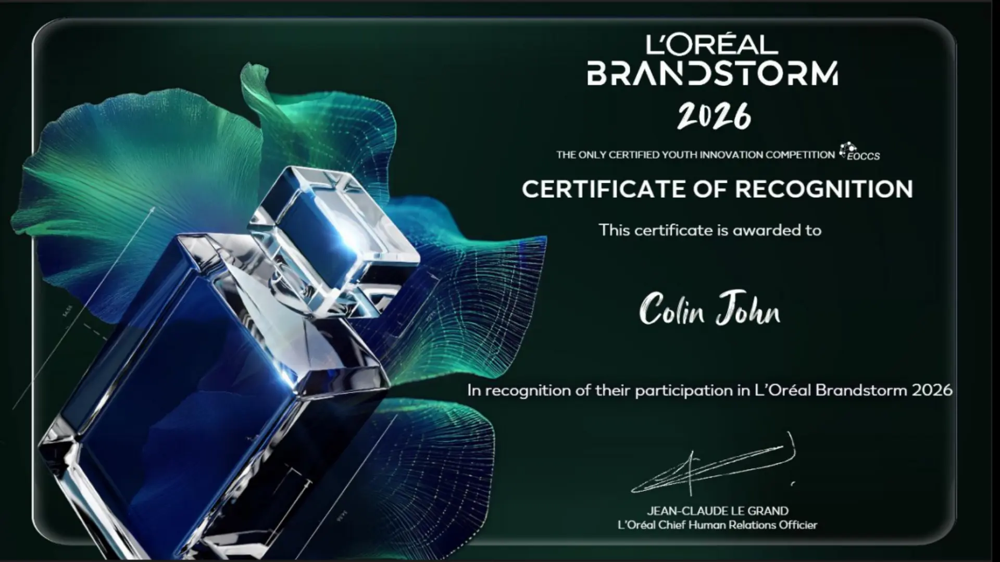

L'Oréal Brandstorm 2026
Personalized Expressive Fragrance Ecosystem
A reimagined fragrance experience for Valentino. Merging AI-powered personalization, AR social sharing, and seamless omnichannel discovery to reach an audience that craves identity and emotional connection.

I signed up for L'Oréal Brandstorm a couple of months before it began. If I'm being completely honest, the free Adobe Express trial caught my attention first. The competition itself had been sitting in the back of my mind ever since my E-commerce professor mentioned it in class, so I figured I might as well register.
Like many optimistic decisions made during my final semester, I assumed Future Colin would somehow have more free time than Present Colin.
Future Colin, in my experience, is an incredibly capable person. He exercises regularly, keeps his inbox organised, replies to emails within the hour, and apparently has no deadlines whatsoever.
Unfortunately, I eventually became Future Colin.
By then, university had become much busier than I expected. I was preparing for IELTS, balancing work, and putting together applications for master's programmes. Brandstorm quietly slipped into that corner of the mind reserved for things that once sounded like excellent ideas.
Nothing happened for weeks.
I never found a team.
Eventually I stopped thinking about it.
Then, about a week before the deadline, someone invited me to join theirs.
I remember staring at the message for a moment because it felt oddly familiar. Life has an annoying habit of presenting opportunities only after you've convinced yourself they are no longer relevant. Perhaps there is a law of the universe stating that anything interesting must arrive precisely when your calendar has already surrendered.
I accepted anyway. Curiosity has always been one of my less practical qualities.
The concept itself was surprisingly enjoyable to think about. We started asking a question I had never really considered before.
Why does discovering fragrance still feel so . . . analogue?
Almost every part of modern life has become personalised. Music, films, shopping, even the advertisements we try so hard to ignore. Somewhere along the way, algorithms became strangely good at predicting what we might enjoy. Sometimes a little too good. Mine still hasn't decided to burn my breakfast, although after giving an entire speech about intelligent toasters, I probably shouldn't give it any ideas.
Perfume still asks you to wander around a shop spraying tiny strips of paper until your nose politely resigns from its duties.
There is something oddly charming about that.
There is also room for improvement.
One thing we kept coming back to was the role AI should actually play.
It is surprisingly easy to let AI become the main character of a concept because, well, it is AI. We deliberately tried to avoid that. The technology was never supposed to choose someone's fragrance for them. Its role was much quieter.
We imagined it as someone who knew your taste well enough to say, "If you liked this, you might enjoy this too."
Music streaming services have been doing something similar for years.
Fragrance simply hasn't caught up yet.
I liked that part.
Every generation wants to express itself. Gen Z simply happens to have better tools for doing it. Whether that's Spotify Wrapped, customised phone wallpapers, or an Instagram profile that somehow communicates your entire personality through nine square images, identity has become something people actively curate.
Fragrance feels oddly disconnected from that world.
The part I found most interesting was fragrance layering.
Before this competition I had never really thought about combining perfumes. I always assumed people chose one fragrance and stayed loyal to it.
It turns out fragrance layering already exists. AI simply makes experimenting with it much less intimidating.
The more I thought about it, the more I realised luxury brands are rarely selling a product alone. They're selling a feeling. A story. Sometimes even a small ritual that begins the moment someone walks into the shop.
Buying a fragrance already feels ceremonial. The challenge was extending that feeling beyond the checkout counter. If someone keeps discovering new combinations weeks after leaving the shop, the relationship with the brand naturally lasts longer too.
Looking back on the project months later, I realized the most interesting part wasn't AI.
It was discovering how much thought goes into something as ordinary as buying perfume.
Before Brandstorm I never really questioned why fragrance shopping looked the way it did. Now I can't walk into a perfume store without wondering how differently the experience could be designed.

The project itself never really found its footing. Conversations gradually became quieter, and the collaboration slowed down long before the competition ended.
When the results were announced, I wasn't particularly surprised.
Oddly enough, that isn't the part I remember.
What stayed with me was how easily an interesting idea can appear in the middle of an inconvenient week.
We tend to imagine creativity arriving on quiet Sunday afternoons with a cup of coffee and an empty schedule.
In reality, it usually turns up while you're revising vocabulary for an English exam, jumping between work calls, and wondering whether you've remembered to attach the correct documents to a university application.
Life rarely waits until you've finished one chapter before introducing the next.
Curiosity doesn't care whether your calendar is full.
Sometimes an idea is worth following simply because it asks an interesting question.
Even if it only lasts a week.
If you're reading this because you're preparing for Brandstorm yourself, I hope the presentation below gives you a few ideas to build on.
Every competition begins with a question.
I hope you enjoy chasing yours.
Certificate of Recognition
EOCCS Certified Youth Innovation Competition
